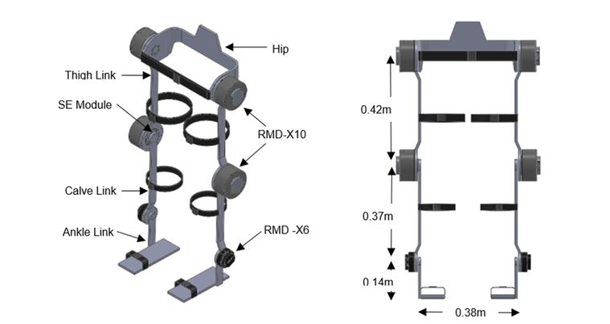
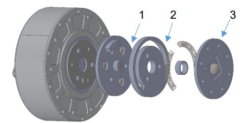

University of Leeds · Individual project · Oct 2022 to May 2023
Designed a lower-body exoskeleton to help elderly users avoid falls. In simulation it walked and caught its balance after pushes of 20 Ns, and a sensing upgrade I designed let it detect when the user intends to move.
Balance
Recovers from pushes
Caught itself after 20 Ns impulses, and after single 30 Ns impulses.
Sensing
Reads intent to move
Hall effect sensing in the joints fed three fuzzy controllers tuned on human gait data.
Sizing
Actuators sized from first principles
Static torque analysis and a direct versus harmonic drive trade study.
Build
6 DOF in 10 kg
A lightweight aluminium frame sized from average human dimensions.
Falls are a major risk for elderly people. The brief was a lower-body exoskeleton that supports everyday movement and actively helps the wearer rebalance when they are pushed or trip.
That meant sizing actuators for real joint torques while keeping the motors compliant with the wearer.
Worked alone from concept to simulation. I designed the 6 DOF structure in SolidWorks from average human dimensions, and sized the joint actuators from a static torque analysis and a direct drive versus harmonic drive trade study.
I designed a series elastic actuator (SEA) module for passive compliance, added Hall effect sensing, and simulated capture point stepping control in Simulink using an inverted pendulum model and analytical inverse kinematics.
In simulation the exoskeleton walked and recovered its balance from 20 Ns impulses and single 30 Ns impulses.
The SEA upgrade let it detect the user's intent to move, feeding three fuzzy inference controllers tuned on human gait data.
| Result | Recovers from 20 Ns pushes |
|---|---|
| Structure | 6 DOF, 10 kg aluminium |
| Dimensions | Thigh 0.42 m, calf 0.37 m, ankle 0.14 m, width 0.38 m |
| Actuators | RMD-X10 at hip and knee, RMD-X6 at ankle |
| Compliance | Series elastic actuator module with Hall effect sensing |
| Control | Capture point stepping, inverted pendulum model, analytical inverse kinematics |
| Intent detection | Three fuzzy inference controllers tuned on human gait data |
| Tools | SolidWorks, MATLAB Simulink |


Capture point control
The controller treats the body as an inverted pendulum and works out where the next foot must land to stop a fall. Analytical inverse kinematics then turns that step into joint angles for the actuators.
Contact